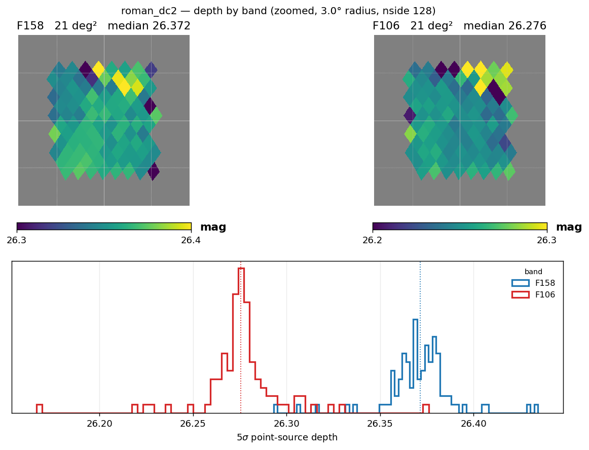
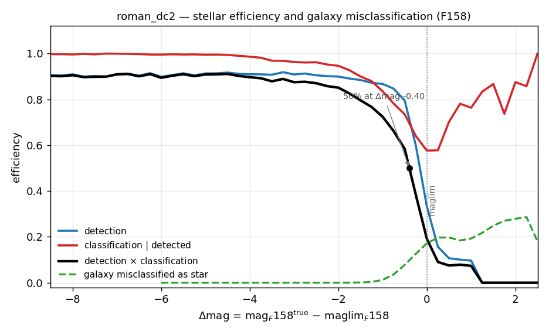
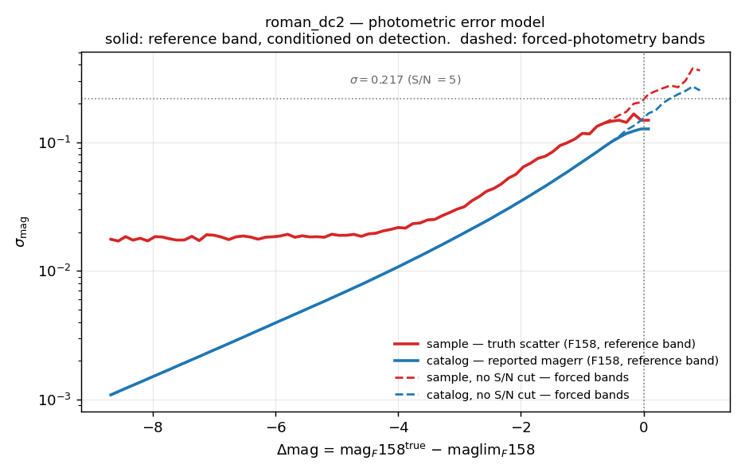

Roman#
Roman is supported by StreamObs.
Available releases#
release |
bands |
footprint |
reference band |
median reference-band depth |
|---|---|---|---|---|
|
F106, F129, F158 |
~21 deg² (Roman–Rubin DC2, RA 51–56, Dec −42 to −38) |
F158 |
26.375 AB |
|
F158 |
3,513 deg² |
F158 |
26.284 AB |
|
F158 |
2,979 deg² |
F158 |
26.289 AB |
|
F106, F158 |
6,033 deg² (F158); F106 covers only 2,979 deg² within this footprint (see Depth and bands) |
F158 |
26.289 AB |
roman/dc2 is the calibration reference (Troxel et al. 2023)
for all completeness and photometric-error products. The HLWAS tier maps
reuse the DC2-derived tables and apply them via the shared
\(\Delta m = m - m_{\rm lim}\) convention; see Roman HLWAS Survey Files for how the
tiers are defined and how the depth maps are built, and Roman DC2 Survey Files
for the DC2 reference data sheet.
Products#
File(s) |
Contents |
Drives |
|---|---|---|
|
HEALPix 5σ point-source depth map, one file per band |
|
|
|
|
|
|
reference-band (F158) magnitude noise draw / reported-error S/N cut |
|
same columns, no S/N selection applied |
every other band (forced photometry) |
|
|
compact-galaxy contamination rate (informational; not yet consumed by the injector) |
|
E(B−V) HEALPix map, shared across releases |
|
The completeness, misclassification, and photo-error tables above are shared across all four releases; only the depth map differs per release/tier. See Creation for how that sharing is implemented.
Depth and bands#
All maps are nside 128 (RING) HEALPix; off-footprint pixels are set to
hp.UNSEEN.
roman/dc2 — per-band maglim maps built via the desqr recipe and
truth-anchored (the median is shifted to the S/N = 5 magnitude of the
truth-based scatter). Medians: F106 = 26.276, F129 = 26.372, F158 = 26.372,
F184 = 25.343 AB, all over the ~21 deg² DC2 footprint as shipped at nside 128
(26.279 / 26.375 / 26.375 / 25.347 over 16.4 deg² before degrading). F184 has a map but is
not one of the configured selection-function bands (see Caveats). The DC2
maps serve as the calibration anchor for all HLWAS tier depth maps.

Truth-anchored S/N = 5 maglim maps over the DC2 calibration footprint in F106, F129, and F158, shown at the nside-1024 build resolution (the maps ship degraded to nside 128). F184 is excluded from the selection-function products (see Caveats).
HLWAS tiers (hlwas_wide, hlwas_medium, hlwas_all) — exposure-time-scaled
quasi-depth maps anchored to the DC2 F158 truth-anchored reference depth, so
all tiers share the \(\Delta m\) convention of the DC2 tables. F158 medians:
wide 26.289 over 3,513 deg², medium 26.290 over 2,979 deg², all 26.291 over
6,033 deg². The hlwas_all release additionally ships an F106 map, but it
only covers 2,979 deg² — the medium-tier footprint, not the full 6,033 deg²
F158 footprint — so F106 must not be queried outside that region for this
release; its median there is 26.194.

All-sky Mollweide view of the HLWAS “all” tier (wide + medium + deep + ultra-deep) exposure-time-scaled depth maps in F158 (left, median 26.289 AB) and F106 (right, median 26.194 AB), both anchored to the DC2 truth-anchored S/N = 5 reference (nside 128). Off-footprint pixels are shown in white.
Band coverage. The reference band is F158 in every release.
roman/dc2 additionally supports F106 and F129 (bands configured:
[F106, F129, F158]). The HLWAS tiers support only F158, except
hlwas_all, which also ships the restricted-footprint F106 map above.
F184 is excluded from every release’s configured bands (see Caveats).
Photometric errors#
The reference band is F158 (completeness_band: F158).
Survey.get_photo_error carries two pairs of delta_mag, log_mag_err curves
and picks between them automatically:
For the reference band (F158): the sample curve (
roman_photoerror_f158.csv, truth-based scatter of obs − true — drives the per-source noise draw) and the catalog curve (roman_photoerror_f158_catalog.csv, median reported SExtractormagerr_auto— drives the S/N cut). Both are measured on the S/N > 5 detected population, because that is the population the reference-band curve is applied to.For every other band (F106, F129 — forced photometry from the F158 detection): the
_nocutpair (roman_photoerror_f158_nocut.csv,roman_photoerror_f158_catalog_nocut.csv), measured with no S/N selection, because a non-reference band’s photometry is not conditioned on detection in that band. Using the detected-population curve there would understate the errors.
Call survey.get_photo_error(band, mag, maglim, kind="sample"|"catalog");
StreamObs resolves the correct pair from band and raises ValueError
if the _nocut curve a non-reference band needs is not loaded, rather than
silently falling back to the reference-band curve.
Photometry is on the AB system. get_photo_error returns NaN for
magnitudes brighter than the configured saturation limit (17.0 mag) — the
curves do not model the saturation regime. See
Photometric-error derivation for how the
curves were built and why the two-curve model is needed at all.
Extinction coefficients#
Dust extinction is modeled using the Schlegel et al. (1998) reddening maps.
The adopted extinction coefficients are the official STScI values from Roman-STScI-000825 (Sharma, Table 3), bandpass-integrated with synphot for a solar-parameter Phoenix spectrum:
Filter |
\(A_{\rm band}\ /\ E(B-V)\) |
|---|---|
F106 |
1.1495 |
F129 |
0.8497 |
F158 |
0.6140 |
These values are used to compute
and are applied consistently when generating observed magnitudes. The band ratios have been independently validated to ~1% against the DC2 truth dereddening corrections.
Using it in streamobs#
Configured by config/surveys/roman_{release}.yaml, data in
data/surveys/roman_{release}/:
from streamobs.surveys import SurveyFactory
survey = SurveyFactory.create_survey(
"roman",
release="dc2"
)
maglim = survey.get_maglim("F158", pixel=pix)
completeness = survey.get_completeness(
"F158",
mag,
maglim
)
photo_error = survey.get_photo_error(
"F158",
mag,
maglim
)
For the HLWAS tiers, substitute release="hlwas_wide", release="hlwas_medium",
or release="hlwas_all". The completeness and photo-error tables are shared
across all releases; only the depth map differs per tier.
Caveats#
Selection functions are derived from the ~20 deg² DC2 calibration region and extrapolated across the full footprint — including the HLWAS (~3,400–5,900 deg²) — through the local magnitude-limit parameterisation \(\Delta m = m - m_{\rm lim}\).
The size-envelope classifier is single-band F158; morphological performance in other bands is not separately characterised.
F184 is excluded from the selection-function products: it is deep-tier-only in the community-defined HLWAS and has an unresolved chromatic calibration issue in the DC2 mock.
DC2 simulations correspond to the HLIS reference design depth (~26.9 AB in F158); HLWAS-wide behaviour (~26.3 AB) is obtained by translation in \(\Delta m\), relying on the universality of the \(\Delta m\) parameterisation.
The
hlwas_allmap includes deep/ultra-deep pixels where the DC2-derived selection function may be unreliable (see Roman HLWAS Survey Files).get_photo_errorreturnsNaNfor magnitudes brighter than the configured saturation limit (17.0 mag) — the curves do not model the saturation regime.
Creation#
The methodology for deriving all selection-function products is documented in Selection-Function Derivation Methodology.
How the survey was simulated#
All selection-function quantities are measured from the Roman–Rubin DC2 synthetic survey of Troxel et al. (2023): ~20 deg² of image-level simulations of the Roman High Latitude Imaging Survey reference design at full depth, reaching a 5σ point-source depth of ~26.9 AB in the F106/F129/F158 bands and 26.2 AB in F184. Stars are drawn from a Galfast Milky Way model and galaxies from the cosmoDC2 extragalactic catalog. Object detection and photometry are performed with SExtractor on a median coadd detection image, with forced photometry per band over 1039 coadd tiles; the recommended catalog-level selection of S/N > 5 in the detection image is applied on top.
The matched detection→truth catalog links every detected source to its truth
counterpart (1″ positional match, flags == 0 + true-S/N > 5 in F158
selection), enabling direct characterisation of photometric uncertainties,
detection efficiencies, and stellar classification performance. For detailed
construction steps see Roman DC2 Survey Files.
The HLWAS tiers (hlwas_wide, hlwas_medium, hlwas_all) reuse the
DC2-derived completeness, misclassification, and photo-error tables unchanged
and pair them with their own exposure-time-scaled depth maps
(scripts/roman/build_hlwas_maglim_maps.py); only roman/dc2 itself is
independently derived end-to-end
(scripts/roman/create_streamobs_files_hlwas.py).
Depth-map derivation#
Depth maps describe the spatial variation of the Roman 5σ limiting magnitude across the survey footprint.
DC2: built via the desqr recipe and then truth-anchored — the median is shifted to the S/N = 5 magnitude of the truth-based scatter of (obs − true). Truth-anchored DC2 F158 median: 26.375 AB.
HLWAS tiers (Option B — DC2 truth-anchored, exposure-ratio scaling):
with DC2_REF_DEPTH = 26.375 AB (F158) / 26.279 AB (F106) — the median of the
corresponding DC2 truth-anchored maglim map — and DC2_REF_EXPTIME = 770.0 s
(the DC2 HLIS reference per-pixel exposure = 5.5 dithers × 140 s/exposure,
Troxel et al. 2023 Sec. 3.1); t(pix) is the per-pixel exposure time from the
tier’s .hsp exposure-time map, used directly. F158 wide ≈ medium (single-band)
because medium’s extra HLWAS depth vs. wide is in additional bands, not F158
alone; both tiers have the same F158-only median exposure time (~645 s) and
the same DC2 reference anchor. Generated by
scripts/roman/build_hlwas_maglim_maps.py.
Star/galaxy classification#
The stellar selection function uses a single-band F158 size-envelope classifier that separates point sources from resolved objects in the F158 half-light-radius vs. magnitude plane. Stars that pass the S/N > 5 gate and fall within the size envelope are counted as classified detections. Full details of the size-envelope boundaries and the freeze magnitude are given in Selection-Function Derivation Methodology.
The data file roman_stellar_efficiency_cutf158.csv provides, as a function
of \(\Delta m_j = m_j - m_{{\rm lim},j}\):
detection_eff— fraction of true stars with a clean true-S/N > 5 detection, against the full truth-star denominator (the S/N > 5 cut is baked in once here);classification_eff— fraction of those detected stars classified as point sources by the F158 size envelope;classification_detection_eff— their product, the combined efficiency used by StreamObs to probabilistically determine whether an injected star is observed.
The combined efficiency is the single curve that StreamObs applies; it encodes both the detection step and the morphological classification step in the shared \(\Delta m\) convention, so the S/N > 5 cut is never re-applied independently.
Compact galaxies (true \({\rm size\_true} < 0.3\ {\rm arcsec}\)) can be
misclassified as point sources by the size-envelope classifier, producing a
contaminant population for stellar-stream analyses. The galaxy contamination
curve is stored in roman_galaxy_misclass_cutf158.csv as
missclassification_eff vs \(\Delta m\). The compact-galaxy size used to select
the sample is an interim measured-Roman proxy
(SIZE_SOURCE = measured_roman; the cosmoDC2 true-size upgrade is pending).

Detection efficiency, stellar classification efficiency, combined stellar efficiency, and galaxy contamination efficiency as a function of distance to the local F158 magnitude limit \(\Delta m = m - m_{\rm lim}\). The bright cut at \(\Delta m = -8.7\) (saturation) removes rows where flux non-linearity affects the size measurement.
Photometric-error derivation#
The reported SExtractor magerr_auto underestimates the truth-based scatter
of \((m_{\rm obs} - m_{\rm true})\) by a flat factor of approximately 2 in all
bands (underestimated correlated coadd noise). StreamObs therefore uses the
two-curve model described in Photometric errors
above: the sample curve is the truth-based scatter, the catalog curve
is the median reported magerr_auto. Both curves are stored as
log_mag_err (base-10 logarithm of magnitude uncertainty) vs delta_mag. A
bright-end saturation cut removes rows with \(\Delta m < -8.7\); for brighter
sources the scatter increases discontinuously due to pixel saturation.

Photometric uncertainty \(\sigma_m\) as a function of distance to the local F158 magnitude limit for the sample (truth-based scatter, drives the noise draw) and catalog (reported magerr, drives the S/N cut) curves. The factor-of-~2 separation between the curves reflects the underestimated correlated coadd noise in the DC2 mock.
Derivation-level limitations#
The galaxy misclassification curve uses an interim measured-Roman proxy for compact-galaxy size (
SIZE_SOURCE = measured_roman); the cosmoDC2 true-size upgrade is pending.